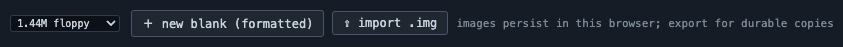
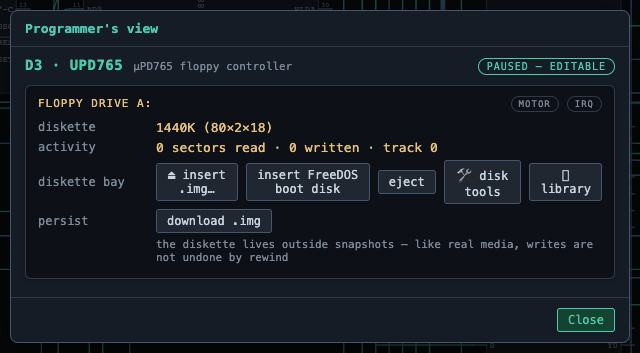
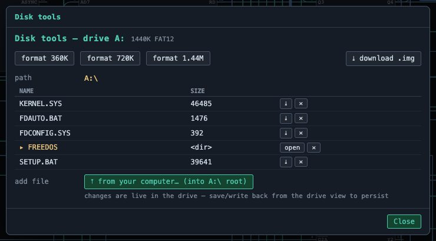

The tool carries a complete FreeDOS 1.3 install floppy, and can synthesize a bootable
FreeDOS hard disk on demand: it formats a 10.4 MB image with a hand-assembled MBR bootstrap,
transplants FreeDOS's own boot record, installs the kernel and command interpreter, copies a small DOS
toolkit into C:\DOS, and writes a CONFIG.SYS and AUTOEXEC.BAT.
The result boots to a C:\> prompt with no floppy in the drive.
Your own images live in the browser between sessions. You can format blank media, import
.img files, duplicate the built-ins to get an editable copy, export anything to your
machine, and populate an image from a folder on your computer — files are copied into the image's FAT
filesystem with 8.3 name mangling and subfolders preserved.
The library


The drive

FAT tools
